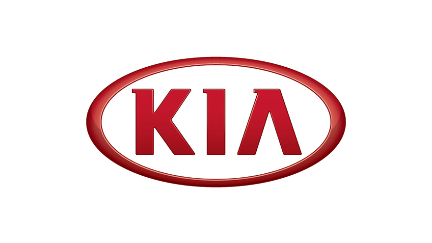

기아 뉴스
기아자동차, 2020년 2분기 경영실적 발표
2020-07-23

기아자동차㈜는 23일 서울 양재동 기아자동차 본사에서 컨퍼런스콜로 기업설명회(IR)를 열고 2020년 2분기 경영실적을 발표했다.
기아자동차는 2020년 2분기 경영실적이 ▲매출액 11조 3,688억원(전년 동기 比 21.6%↓) ▲영업이익 1,451억원(72.8%↓) ▲경상이익 2,114억원(67.8%↓) ▲당기순이익 1,263억원(75.0%↓) 등으로 집계됐다고 밝혔다. (IFRS 연결기준)
기아자동차 관계자는 2분기 실적과 관련해 “코로나19의 전세계적 확산 영향이 본격화되며 모든 시장에서 수요가 급감하는 등 경영여건이 어려웠다”며 “이러한 가운데에도 고수익 신 차종 및 RV 판매 비중 확대, 고정비 축소 노력, 우호적 환율 영향으로 판매감소 영향을 일부 상쇄했다”고 설명했다.
이어서 “하반기에는 국내 시장에 출시할 신형 카니발, 해외 시장 진출을 앞두고 있는 신형 K5와 쏘렌토 등 신차와 셀토스 등 고수익 차종 판매 확대, 북미 시장에서 인기를 얻고 있는 텔루라이드 증산 등으로 수익성 확보에 최선을 다할 것”이라고 밝혔다.
▶ 2020년 2분기 실적
기아자동차의 올해 2분기(4~6월) 판매는 ▲국내에서 전년 대비 26.8% 증가한 16만 1,548대 ▲해외에서 전년 대비 39.7% 감소한 35만 4,502대 등 ▲글로벌 시장에서 전년 대비 27.8% 감소한 51만 6,050대를 기록했다. (도매 기준)
비교적 코로나19 영향이 적었던 국내 시장에서 K5, 쏘렌토, 셀토스 등 신차효과와 개별소비세 70% 인하에 따른 수요 확대 영향으로 전년 대비 큰 폭으로 판매 증가를 기록했다.
해외 시장은 코로나19 영향으로 대부분 지역에서 공장 가동 및 딜러의 영업 활동 중단이 본격화되며 미국, 유럽, 인도 등 전 지역에서 판매가 큰 폭으로 감소했다.
해외 주요 권역별로는 ▲북미에서 전년 2분기 대비 40.3% 감소한 12만 2,799대 ▲유럽에서 50.6% 감소한 6만 9,103대 ▲중국에서 5.3% 증가한 6만 5,814대 ▲러시아, 중남미, 아프리카/중동, 아시아 등 기타 시장에서 46.0% 감소한 9만 6,786대를 판매했다.
2분기 매출액은 국내 시장에서의 역대 최다 판매, RV와 신차 중심의 판매 믹스 개선에 따른 대당 단가 상승 및 우호적인 원-달러 환율 영향에도 불구하고 글로벌 판매가 큰 폭으로 감소하면서 전년 대비 21.6% 감소한 11조 3,688억원을 기록했다.
특히 셀토스, 니로 등 인기 모델들의 꾸준한 국내외 판매와 신형 쏘렌토의 국내 판매 호조 등으로 RV 판매 비중이 전년 대비 6.7%포인트 증가, 역대 최고 수준인 53.7%를 기록하며 매출과 영업이익에 긍정적 영향을 미쳤다.
매출원가율은 해외 공장의 가동 차질에 따른 고정비 부담 증가로 전년 대비 0.9%포인트 상승한 84.8%를 기록했다. 판매관리비율은 전사적인 비용 절감 노력이 있었지만 매출 감소 등의 영향으로 전년보다 1.5%포인트 높은 13.9%를 기록했다.
그 결과 영업이익은 지난해보다 72.8% 감소한 1,451억원을 기록했고, 영업이익률은 전년 대비 2.4%포인트 하락한 1.3%로 집계됐다.
한편 올해 상반기까지 기아자동차의 글로벌 누적 판매는 ▲국내에서 전년 대비 14.6% 증가한 27만 8,287대 ▲해외에서 21.8% 감소한 88만 6,448대 등 ▲글로벌 시장에서 전년 대비 15.4% 감소한 116만 4,735대를 기록했다. (도매 기준)
상반기 매출액은 전년 대비 3.8% 감소한 25조 9,357억원, 영업이익은 47.7% 감소한 5,896억원으로 집계됐다.
▶ 향후 전망 및 계획
기아자동차는 하반기에도 코로나19 재확산 및 주요 국가 간의 갈등에 대한 우려로 경영여건의 불확실성이 어느 때보다도 높을 것으로 전망되는 가운데에서도 수익성 높은 신차 중심의 판매 역량 집중과 수요 회복을 대비한 생산 및 판매 능력 관리를 통해 경쟁력을 확보해 나갈 계획이다.
먼저 국내에서는 하이브리드 판매 개시로 경쟁력을 높인 신형 쏘렌토와 곧 출시를 앞두고 있는 신형 카니발 등 신차 판매를 중심으로 하반기 개별소비세율 변경 등에 따른 수요 위축에 적극 대응해 안정적인 판매를 추진할 예정이다.
해외에서는 판매 호조세를 이어가고 있는 텔루라이드와 셀토스의 판매에 집중하고, 신형 K5와 쏘렌토, 쏘넷(인도 엔트리급 SUV) 등 신차를 주요 시장에 차질 없이 투입해 판매 모멘텀을 이어갈 계획이다.
더불어 미국 조지아 공장과 인도 공장 등 해외 공장의 생산능력을 높여 향후 수요 회복에 선제적으로 대응하고 수익성을 지속 개선시켜 나갈 계획이다.
또한 전사적인 비용 절감과 언택트 문화 확산에 따른 온라인 마케팅 활동 추진 등으로 코로나19 확산에 대응하고, 선제적 전기차 전환과 자율주행 및 커넥티비티 기술을 바탕으로 한 모빌리티 서비스 개발 등 미래 경쟁력 강화를 위한 투자와 노력을 지속해 나갈 방침이다.
기아자동차 관계자는 “2분기 코로나19 확산 영향이 본격화돼 어려움을 겪었지만 수익성 방어를 위해 전방위적으로 노력하고 있다”며 “하반기에도 어려운 경영환경이 지속되겠지만 전사적 역량을 집중해 위기 극복에 최선을 다할 것”이라고 전했다.
 이전 글
기아자동차, 모빌리티 전문 기업 퍼플엠 설립
2020-07-20
이전 글
기아자동차, 모빌리티 전문 기업 퍼플엠 설립
2020-07-20
 다음 글
기아자동차, 라파엘 나달 후원 연장 온라인 조인식 개최
2020-07-26
다음 글
기아자동차, 라파엘 나달 후원 연장 온라인 조인식 개최
2020-07-26